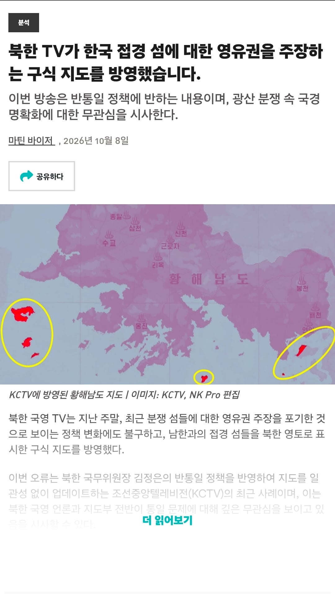
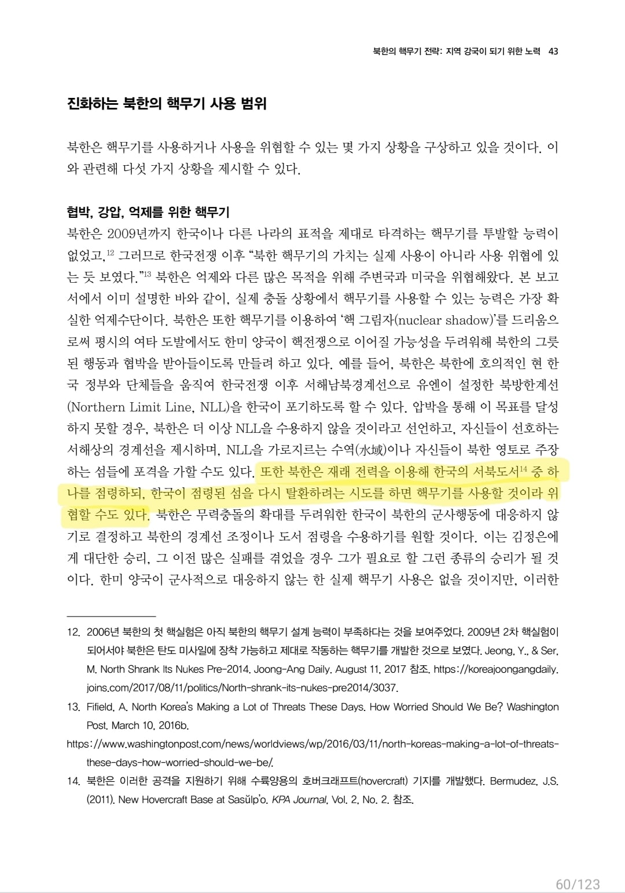

싱크탱크 아산연구소 보고서에 따르면 북한이 "서해5도를 점령 후 전술핵으로 위협하여 반격을 방지하는 전략"을 쓸 수도 있다고 함.


싱크탱크 아산연구소 보고서에 따르면 북한이 "서해5도를 점령 후 전술핵으로 위협하여 반격을 방지하는 전략"을 쓸 수도 있다고 함.
와 ㅈ됐구나
해병대, 해군은 죽은목숨
미국이 약해진 틈을 타서
북한 저놈들 조만간 서해에서 또 일 벌리겠네
북한이 서해 5도를 공격하고 혼란 준 다음 한국을 틀어막고 러시아는 발트3국 확전해서 유럽 틀어막고
중국이 대만 침공하겠네
미국은 이란전쟁한다고 바쁘고, 절호의 기회지 "중국은"
에????
한국땅 뺏어서 전초기지로 한다고?
이 전제조건부터 불가능인데
계속 그런 식으로 나오면 단호한 태도로 지원하겠다!
서해5도 점령전가면 전면전이지 다들 집에있는 군복이나 챙겨라 니들다 동원 예비군아니냐??? 나는 민방위라서
전면전 본격화하고 5년 이상 전쟁 늘어지고
625처럼 처절하게 전쟁하기 시작하면
40대도 징집할거 같은데ㅋㅋㅋㅋㅋㅋ
함 해봐 씨바라
북한으로서는 향후 4년동안이 그나마 기회이긴 함
중국이 대만에게도 하기 힘든 상륙전을 북한이?
러시아와의 교류로 어느때보다 호경기인데 굳이?
드론 어택땅찍으면 어케 막지
지구 주딱이 법, 원리 이런거 좃도 신경안쓰니까
그냥 그런 시대가 되어가는거 같음
나도 안지킴ㅋ좃까셈ㅋㅋ
법 없이 살던 원시인시대로 돌아가는거지 뭐~
러시아 하는 행보 보고 우리도 어쩌면...? 이러는 건가
이것도 서로 입장이 다른거라고 쉴드칠라나?ㅋㅋ 지금 추세대로면 백령도도 북한에 줘버릴지도 모를일이지 암 ㅋㅋㅋ
극좌영포티 : 아무리 북한이 우리 영토를 점령한다고 해도 전쟁을 할수는 없잖아???
얘네들은 영토를 뺐을경우에 전면전이 설마 안생긴다 생각하는 바보들은 아닐거라 생각하는데.. 심지어 재래전력으로.. 설마 그정도 바보인가. 한국이 저 정도로 북한이 핵위험들어간 상황에서 미국이 핵우산 작동보장을 못해주면 핵개발 도미노인데
매년 같은 이벤트 발생중
필요없다고 해도 돈 갖다 바치는데 섬 정도야 달라고 하시면 드려야지
저때도 평화를 위해 물러나야된다고 하려나
굴종에 찌들어 있어서 굴종과 평화를 구별못하는놈들 있지
핵가지고 점령할꺼 같은데 그때도 섬포기하고 물러날듯 보인다보여
나 민방위될때까진 전쟁안나야하지~
서울 핵위협하면 ㄹㅇ 다양보할듯
댓글에 정떡 굴리는 병신들 한가득임
이 씨발 주제도 모르는 새끼들 서해안 섬은 원래 종전때 전부 우리꺼였는데 양보해준거구만
개성내놔이씨볼롬들아
어차피 핵으로 위협 시작하는순간 목숨 저당잡힌거라 죽여버리려고 들껄
냅두면 계속 지랄할건데 전술핵이건 뭐건 되찾고 보복도 해야지